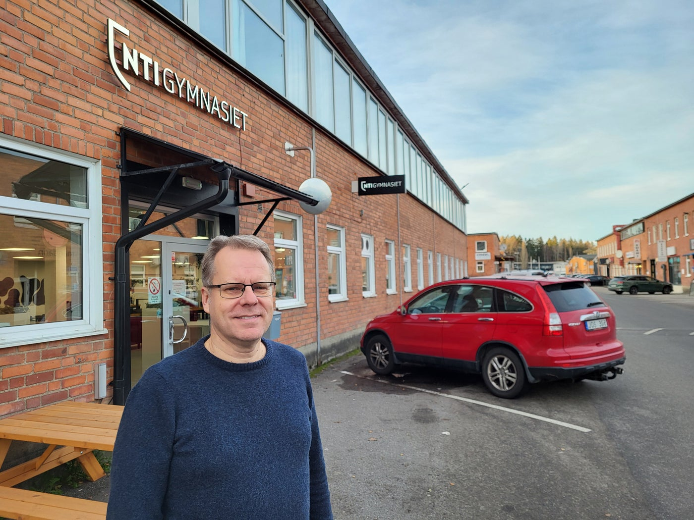

Välkommen på Öppet Hus!
Lördagen den 5 december kl. 11:00 - 13:00
Upplev vår skola
Kom och besök oss under vårt Öppet hus! Du får möjlighet att gå på rundvandring med våra elever, träffa lärare och testa på roliga aktiviteter i våra olika salar. Missa inte chansen att upptäcka hur det är att studera Webbutveckling och teknik hos oss!

Det här kan du göra under dagen
Aktiviteter
- Rundvandring: Elevledda turer runt om i skolans lokaler
- Information: Rektor informerar i aulan kl. 11:30
- MakerSpace: Titta på 3D-utskrifter och skapande
- Java: Testa VR-glasögon och virtuella miljöer
- Python: Tävling - gissa datordelarna!
- MathLab: Utmana dig själv med kluriga mattenötter
Anmälan och plats
Skolans HemsidaKontaktinformation
Adress: Wedavägen 3c, 152 42 Södertälje
Telefon: 070-734-73-81
E-post: sodertelje@ntig.se